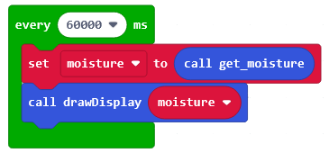
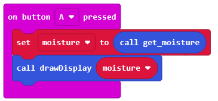

Micro:bit & Fugtighedssensor
Mål fugtigheden i jorden, vis fugtighedsniveauet og livestream dataen.

Design, programmere og skab.
I dette forløb skal I bruge Micro:bit til at måle fugtigheden i plantejord for derefter at vise målingen ved hjælp af Micro:bit’ens LED-matrix. Bagefter skal I forsøge at forbinde Micro:bit’en til WiFi, hvorefter I skal prøve at sende den målte fugtighed til en server ved hjælp af MQTT-protokollen. Fugtighedsdataene skal sendes til en MQTT Broker og derefter vises live i en webbrowser via en WebSocket-forbindelse (findes under Resourcer).
Igennem forløbet skal I arbejde med både hardware og software, eksperimentere med sensorer og netværksteknologier og opleve, hvordan IoT (Internet of Things) kan bruges til at overvåge og optimere pleje af planter.

Vi skal nu arbejde med vores Micro:bit og et Expansion Board. Jeg har valgt her at arbejde Elecfreaks IoT board, som bl.a. giver vores Micro:bit adgang til et esp8266 WiFi modul.
I denne udgave af forløbet, er det dog ikke nødvendigt med WiFi, derfor ville Tinker Kit fra Elecfreaks, eller tilsvarende, også være tilstrækelig.
Vi benytter os a blok programmeringen på makecode.microbit.org.
Hvis I ikke allerede har gjort det, så opret en bruger på makecode.microbit.org.

Tryk på New Project  og giv dit projekt et navn. Eks. Plant irrigation system:
og giv dit projekt et navn. Eks. Plant irrigation system:

Vi er nu i gang med vores projekt i Makeocode.
Vi skal i denne del benytte os af en fugtighedssensoren og en Micro:bit og et udvidelseskort. Vi bruger her ELECFREAKS IOT:bit board (Internet WiFi Extension Board for micro:bit), som vist herunder:

Tilslut sensoren til P1 som vist ovenfor.
Som det første, skriver vi en funktion til at måle fugtigheden. Funktionen kalder vi get_moisture da man anbefaler, at navngive funktioner logisk. Da det er en analog sensor, skal vi bruge analg read pin til at læse sensores indput.
Design get_moisture()
Design din egen funktion ved at trykke på Advanced -> Functions.


Tryk derefter på Make a Function...

Vi har nu en funktion, som v skal "udfylde" med blokke.
Opret en variabel og kald den moisture. Dette gør du under 
Tryk derefter Make Variable og kald variablen moisture.

Vi har nu en funktion og en variabel.
Lad get_moisture() gøre følgende:
- læs værdien fra P1 og gem i variablen moisture
- vent 100 ms
- læs igen værdien fra P1 og adderer det med værdien i variablen
- vent 100 ms
- gentag, læs igen værdien fra P1 og adderer det med værdien i variablen
- vi finder nu gennemsnittet af de læste værdier ved at dividere med 3 og gemmer gennemsnittet i variablen (overskriver variablen med gennemsnittet)
- mappe den læste værdi (finder procent) af fugtigheden
- afrund variablen
- returnere variablen
Forsøg selv at finde de korrekte blokke. Du skal bl.a. benytte modulerne:


Du skulle nu gerne have en funktion magen til den nedenfor:

Funktionen opdaterer variablen (moisture) men returnerer også moisture.
Vi har nu en funktion der læser fugtigheden og returnerer værdien mellem 0 og 100.
Vi skal nu designe endnu en funktion, der anvender get_moisture() funktionen og som derefter benytter Micro:bit’ens led-matrix til at illustrerer fugtighedsniveauet.

Vi skal gøre følgende:
- designe en ny funktion: drawDisplay
- sende data hver 60000 ms
- design funktionen button a
Design drawDisplay funktion.
Design drawDisplay funktion ved at trykke på Advanced -> Functions..
Tryk derefter på Make a Function...
Denne funktion skal tage et argument. Det betyder, at vi skal tilføje en parameter, af en hvis type som vi kan anvende inde i selve funktionen. Tryk på Number (type) for at tilføje en parameter af typen tal. Parameteren kalder vi for moisture.
Vi skal bruge dette argument for at bestemme hvordan Micro:bit'ens led-matrix skal lyse.

Vi skal bruge følgende blokke i vores funktion:

OBS: Når du designer funktionen drawDisplay skal du ikke bruge vores oprettede variabel; moisture fra tidligere, men vores parameter, som vi valgte da vi oprettede funktionen.
Træk moisture parameteren ned, for at teste om argumentet er større end 95. Hvis moisture er større end 95, skal led-matrixet lyse helt op. Ellers tjekke om argumentet er større end 90 osv.
Funktionen kunne eks. se ud som vist herunder:

Kald drawDisplay() og vis sensor data hver 60000 ms.
Vi skal nu lave en loop/lykke der jævnligt kalder get_moisture() for at tjekke jordfugtigheden, for derefter at vise den procentvise fugtighed ved at kalde drawDisplay()
Design lykken ved at trykke: loops.

Find derefter lykken der siger every 500 ms
Ændre intervallet til 1 min

I loopen skal vi bruge følgende blokke:
Du skulle nu gerne have en loop magen til den nedenfor:

Design button a.
Vi vil nu opdater button A så den benytter vores nye drawDisplay funktion, og giver visuel feedback når Micro:bit'en har læst sensorinput.
Her skal vi sætte variablen: moisture til den returnerede værdi fra vores get_moisture funktion.

Vi har nu designet og programmeret en Micro:bit til at registrere jordfugtighed og give os et visuelt output.
Prøv nu selv at forbedre Micro:bit'en. I kan bl.a. kigge på følgende:
- calibrere mindste- og største værdi for sensor input. (Afhængig af sensor, så kan værdierne ændre sig for mindste mulig og størst mulig modstand.)
Brug evt. Makecode til at kigge på min version 1 - 4 (under Resourcer). Disse versioner benytter dog WiFi modulet til at sende live opdateringer af jordfugtigheden.